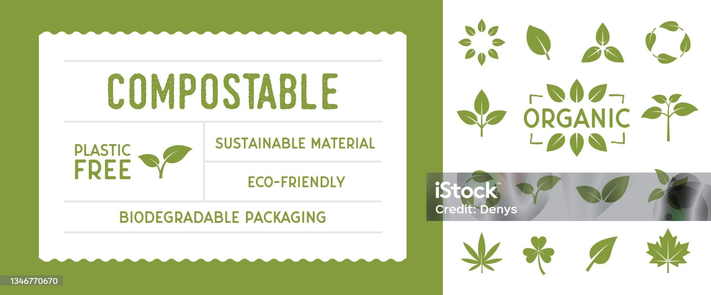
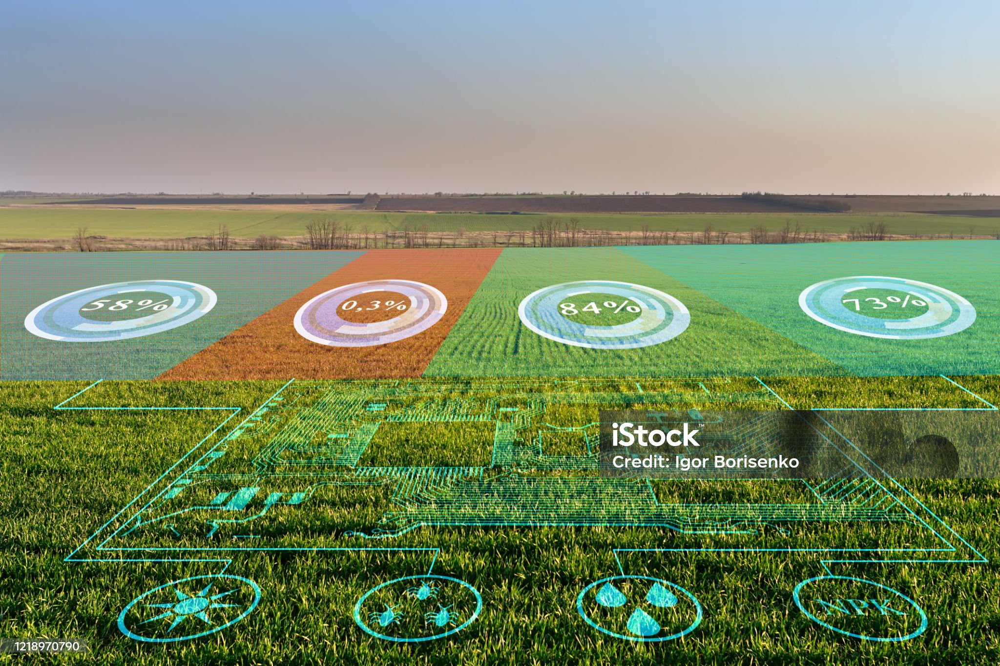

Welcome to the GreenTech Harvest Hub!
Welcome to our marketplace of innovative eco-solutions, where we are dedicated to cultivating a wide variety of sustainable products and services aimed at ensuring a greener future for our planet. Our carefully curated offerings encompass advanced technologies and practices that support environmental stewardship across global markets.Among our key products, we feature state-of-the-art solar-powered irrigation systems designed to conserve water while maximizing agricultural productivity. These systems leverage renewable energy to empower farmers, helping them reduce their carbon footprint while enhancing crop yields.In addition, we provide biodegradable packaging options that offer environmentally friendly alternatives to traditional materials. Our packaging solutions are designed to decompose naturally, reducing waste and contributing to a circular economy.We also offer advanced sustainability software that helps businesses track and improve their environmental impact. This powerful tool enables organizations to monitor resource consumption, manage emissions, and implement sustainable practices effectively.To support businesses in their journey toward sustainability, we provide global consulting services. Our experienced team works closely with clients to develop tailored strategies that align with their specific needs and objectives, ensuring they achieve their sustainability goals.Join us in our mission to promote a sustainable future with innovative solutions that make a positive impact on the world around us.
Please enter your search query above.
Browse by Category
Solar-Powered Irrigation System

Introducing an innovative irrigation system designed to harness solar energy, optimizing water usage for agricultural purposes. This advanced system significantly reduces water waste by 30%, ensuring that every drop counts. By leveraging solar power, it offers a sustainable solution that not only minimizes energy costs but also positively impacts the environment. As a result, farmers can enjoy an impressive 20% increase in crop yields, leading to enhanced productivity and profitability. This cutting-edge technology exemplifies the future of sustainable agriculture, promoting efficient resource management while supporting food security.
Eco-Friendly Packaging

Biodegradable and compostable packaging materials are innovative alternatives specifically designed to replace single-use plastics. Unlike traditional plastics, these materials break down naturally in the environment, minimizing their impact on ecosystems. By supporting circular economy systems, they contribute to reducing overall plastic waste, thereby promoting sustainable practices. These packaging solutions not only help companies meet environmental regulations but also appeal to environmentally-conscious consumers seeking greener choices. By choosing biodegradable and compostable options, we can make significant strides toward a more sustainable future.
GreenTech Software Suite

We offer a comprehensive global platform designed to deliver real-time sustainability analytics and environmental monitoring. This innovative tool empowers organizations to effectively optimize their resources by leveraging data-driven insights related to climate and environmental factors. With our platform, businesses can gain critical visibility into their sustainability efforts, enabling them to make informed decisions that reduce their ecological footprint and enhance overall operational efficiency.
Sustainable Agriculture Consulting
Our expert consulting services are designed to guide businesses in making the transition to sustainable, low-carbon operations. We understand that each organization has unique challenges and opportunities, so we offer customized solutions to meet specific needs. Our team develops tailored global strategies that focus on reducing environmental impact over the long term. By implementing best practices in sustainability and carbon management, we empower companies to not only comply with regulations but also to enhance their overall efficiency and reputation in the market. Together, we can create a roadmap that leads to a greener future while achieving your business goals.
The Latitude & Leaf Framework
GreenTech Solutions is a global leader in the field of sustainable technology, operating in more than 20 countries around the world. We specialize in delivering innovative, scalable eco-solutions that address the pressing environmental challenges faced by various industries. Our comprehensive range of products and services is designed to surpass traditional industry approaches, ensuring enhanced efficiency and reduced environmental impact. In the following table, we outline a detailed comparison between our cutting-edge offerings and conventional methods, highlighting the advantages of our eco-friendly innovations.
| Product | GreenTech Features | Competitor Features | Environmental Impact | |
|---|---|---|---|---|
| Solar-Powered Irrigation System | Optimizes water usage, powered by solar energy, increases crop yields by 20% | Reduces water waste by 30%, lowers carbon footprint | Solar-powered irrigation systems reduce reliance on fossil fuels and minimize water waste | Agricultural businesses seeking sustainable irrigation solutions |
| Eco-Friendly Packaging | Biodegradable, compostable, replaces single-use plastics and global supply chain ready | Reduces plastic waste, promotes circular economy | Companies looking for sustainable packaging options. While promoting circular economy practices, our eco-friendly packaging solutions help reduce environmental impact. | |
| GreenTech Software Suite | Real-time sustainability analytics, environmental monitoring | Helps reduce ecological footprint, optimizes resource use. Driven by AI-driven sustainability insights. | Organizations aiming to enhance sustainability efforts by optimizing resource allocation and reducing ecological footprint. | |
| Sustainable Agriculture Consulting | Customized strategies for low-carbon operations, long-term sustainability planning | Supports transition to sustainable practices, reduces environmental impact | Businesses seeking expert guidance on sustainable agriculture and carbon management |